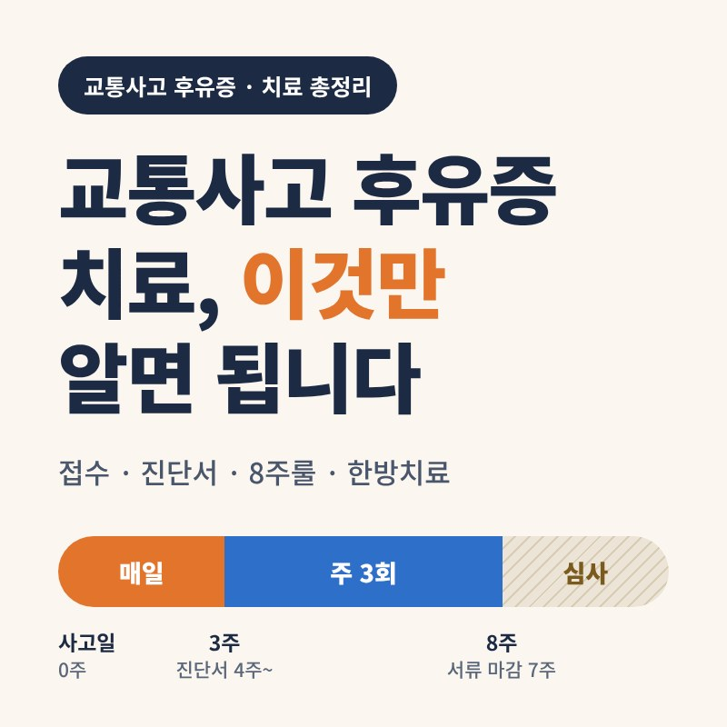
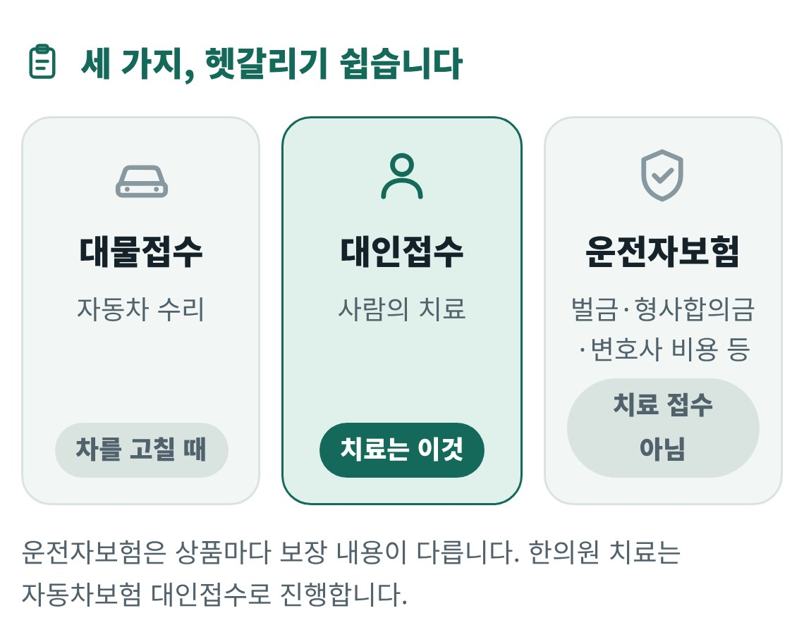
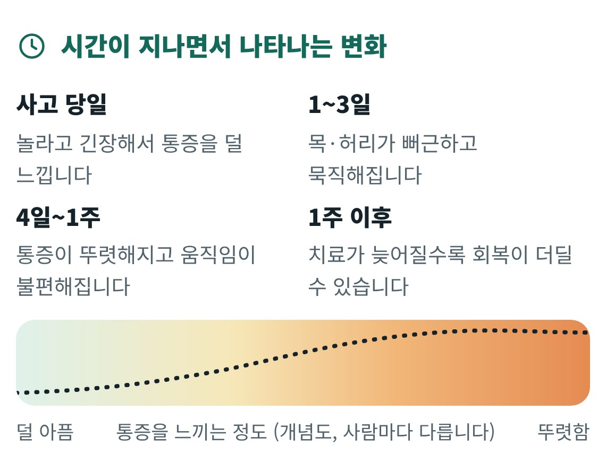
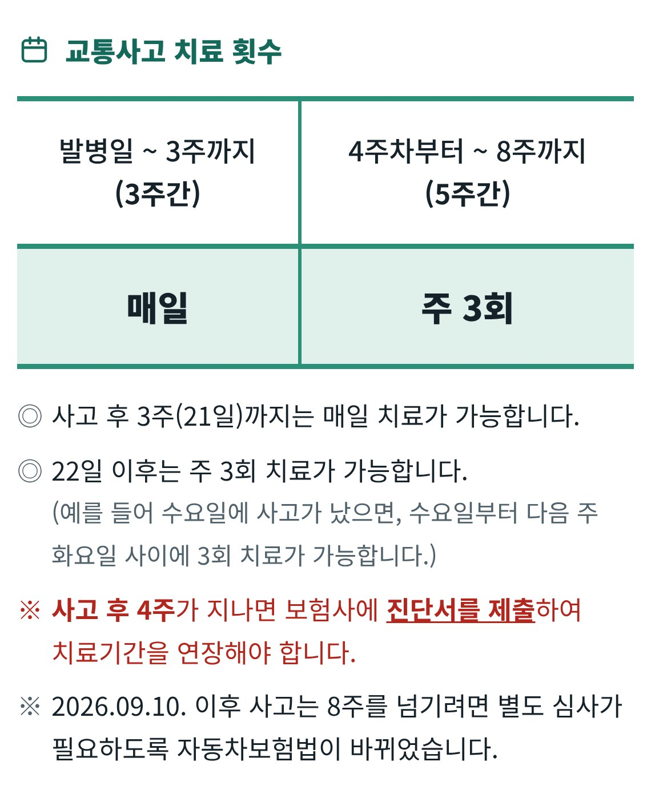
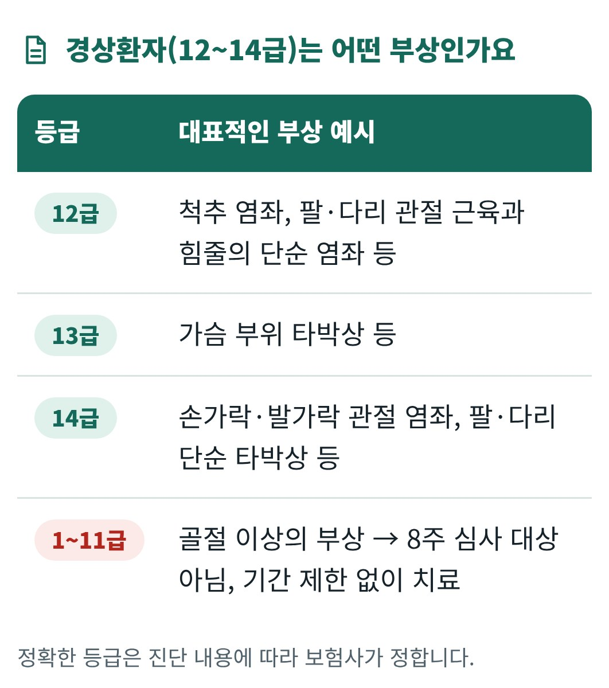
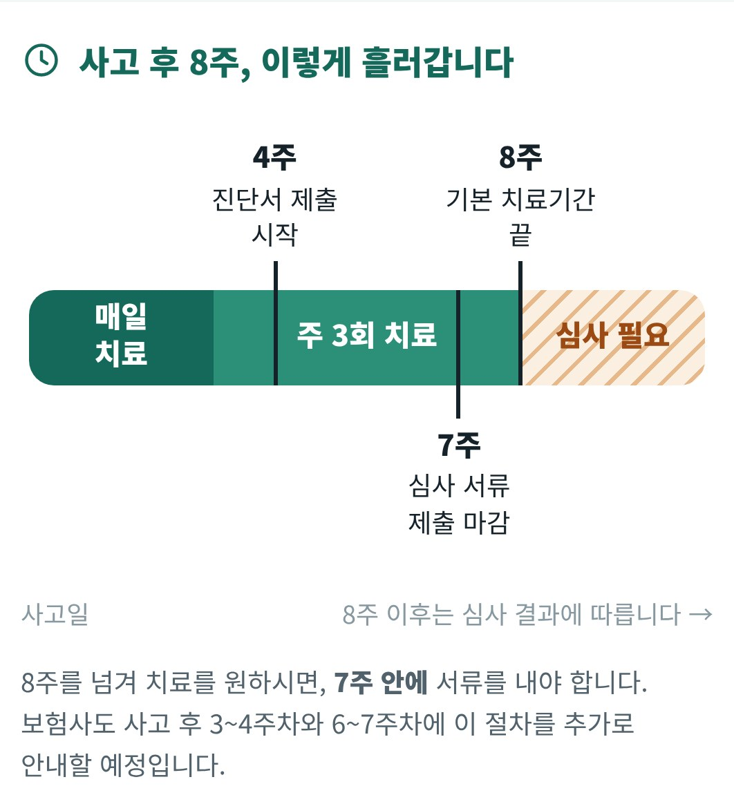
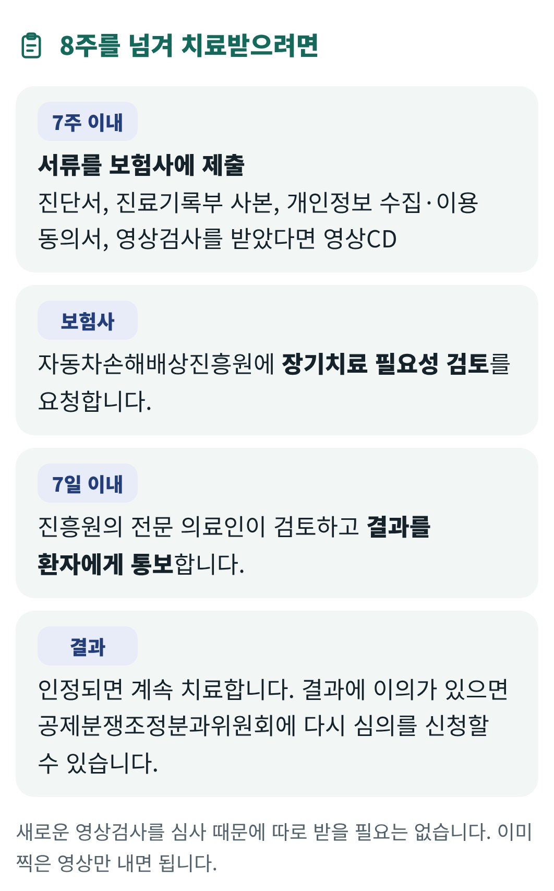
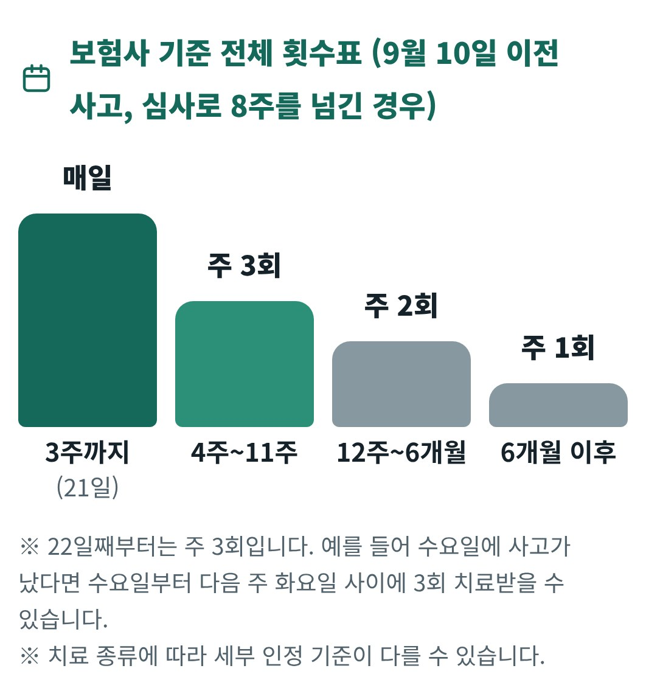
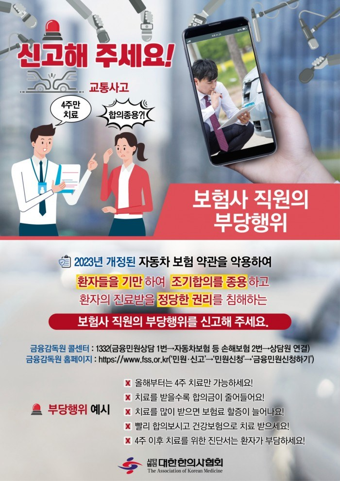
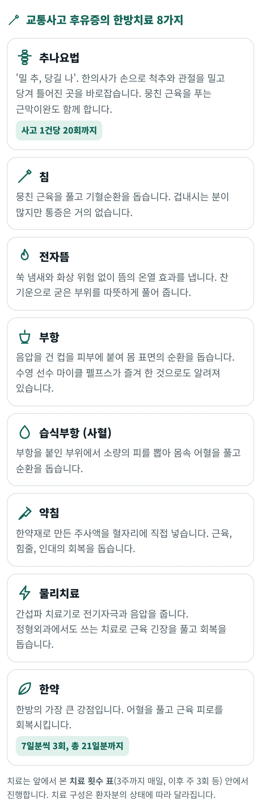

교통사고 후유증 치료, 이것만 알면 됩니다
이 글에서 알 수 있는 내용
- 치료를 시작하는 접수 방법(대인접수)
- 처음엔 괜찮다가 며칠 뒤 아파오는 이유
- 3주까지 매일, 이후 주 3회의 치료 횟수와 8주룰
- 4주 이후 진단서 제출과 비용 돌려받는 방법
- 한의원을 고르는 기준과 한방치료의 종류

교통사고 후 치료를 어떻게 시작하는지, 치료는 얼마나 받을 수 있는지 자주 질문을 받습니다. 그동안 나누어 안내드렸던 내용을 이번 글에 한 번에 모았습니다.
특히 2026년 9월 10일부터 '8주룰'이 시행되어 달라진 부분이 있으니 꼭 확인하시기 바랍니다.
1. 접수: 운전자보험 말고, 자동차보험에 '대인접수'
치료는 자동차보험사에 대인접수를 하고, 대인접수번호를 가지고 한의원에 오시면 시작할 수 있습니다.

접수 순서는 이렇습니다.
- 보험사에 사고 접수
내 보험사 또는 상대방 보험사에 연락합니다. - "사람 치료를 위해 대인접수 해주세요"
차 수리는 대물, 사람 치료는 대인입니다. - 대인접수번호 받기
보험사 담당자 연락처와 함께 메모해 두십시오. - 번호를 가지고 한의원 내원
보험사가 치료비를 지불보증하므로, 일반적으로 병원에서 본인부담금 없이 치료받습니다.
- 내 과실이 더 크거나 단독사고인 경우: 가입하신 담보(자기신체사고, 자동차상해 등)에 따라 접수 방법이 달라집니다.
- 상대 차량이 의무보험(책임보험)만 가입한 경우: 보상 한도가 낮아 치료 중에 본인 부담이 생길 수 있습니다.
2. 초기 증상: 처음엔 괜찮다가, 며칠 뒤에 아파옵니다
아무리 사소한 접촉사고라도, 당장 아프지 않다고 괜찮겠거니 판단하시면 안 됩니다.

사고 순간에는 몸이 긴장 상태라 통증을 잘 느끼지 못합니다. 하지만 시간이 지나면서 근육과 인대의 손상 부위에 염증 반응이 생기고 근육이 굳기 시작합니다. 그래서 빠르면 1~2일, 대개 4~5일, 늦으면 1주일 뒤에 통증이 나타납니다.
한의학에서는 이때 충격으로 뭉친 피, 어혈이 쌓인 상태로 봅니다. 어혈을 빨리 풀어 줄수록 후유증이 남지 않도록 돕기 쉽습니다.
이런 증상이 있으면 사고와 관련이 있을 수 있습니다.
- 뒷목과 어깨가 뻐근함
- 허리 통증
- 두통, 어지러움
- 팔과 손의 저림
- 잠들기 어려움
- 가슴 답답함, 불안감
증상이 없더라도 1주일은 지내 보시고, 합의는 치료가 충분히 된 뒤에 하시기 바랍니다. 합의를 서두르면 뒤늦게 나타난 통증은 치료받기 어려울 수 있습니다.
- 사고 당시 의식을 잃었거나, 심한 두통과 반복되는 구토가 있을 때
- 팔다리에 힘이 빠지거나 감각이 없을 때, 대소변이 이상할 때
- 가슴이나 배가 심하게 아프거나, 뼈가 부러진 것 같을 때
골절 같은 큰 외상은 정형외과에서 치료받으시고, 염좌나 타박 같은 부분은 한의원에서 치료받으시면 됩니다. 한방과 양방은 함께 받으셔도 됩니다.
3. 치료 기간과 횟수: 사고 후 8주, 이 안에 집중해서 치료합니다
첫 3주는 매일, 이후 5주는 주 3회로 치료하고 마칩니다.
2026년 9월 10일부터 경상환자의 치료기간을 관리하는 '8주룰'이 시행되고 있습니다. 원칙상 8주를 넘겨서도 심사를 통과하면 치료를 이어갈 수 있습니다. 하지만 저는 8주를 넘겨 치료받기는 현실적으로 어렵다고 봅니다.
그래서 환자분들께는 아래 표처럼 8주 안에 치료를 마치는 일정으로 안내드리고 있습니다. 교통사고 치료는 보험사에서 정한 횟수 기준을 따르기 때문에, 초기 3주에 집중해서 치료받는 것이 중요합니다.

내 일정 계산해 보기
사고 날짜를 넣으면 진단서·심사 서류 날짜와 치료 횟수 일정을 알려 드립니다. 참고용이며, 정확한 마감일은 보험사 안내를 확인하십시오.
지금 입력된 날짜는 예시입니다. 본인의 사고 날짜로 바꿔 보십시오.
- 4주째-진단서 제출 시작
- 7주째-8주 초과 시 서류 마감
- 8주째-기본 치료기간 끝
치료 횟수 일정
8주룰의 원칙, 자세히 보기눌러서 펼치기
아래는 제도의 원칙입니다. 8주를 넘겨 치료를 원하시는 분이나 9월 10일 이전에 사고가 나신 분은 참고하십시오.
경상환자는 사고 후 8주까지는 지금처럼 치료받고, 8주를 넘기려면 심사를 받아야 합니다.
- 언제부터
- 2026년 9월 10일 이후에 발생한 사고부터 적용됩니다. 그 전에 사고가 났다면 8주 심사는 적용되지 않습니다.
- 누구에게
- 상해등급 12~14급 경상환자 중 염좌나 단순 타박상으로 진단받은 분입니다. 한의원에서 교통사고 후유증으로 치료받는 분의 대부분이 해당됩니다.
- 제외
- 골절·장기손상 등 1~11급 중상환자, 그리고 임산부와 영유아는 심사 대상이 아닙니다.



- 기한 안에 신청했는데 심사가 늦어져 8주가 넘어가도, 결과가 나올 때까지의 치료비는 보험사가 부담합니다.
- 심사에서 인정되지 않더라도, 결과가 나오기 전까지의 치료비는 보장됩니다.
그래서 치료받으실 때 불편한 증상을 진료 때마다 구체적으로 말씀해 주셔야 진료기록부에 남습니다. 국토교통부는 경상환자의 약 90%가 8주 안에 치료를 마친다고 밝혔습니다. 하지만 사람마다 회복 속도는 다르니, 8주 안에 충분히 치료받으시고 필요하면 기한 안에 서류를 준비하시기 바랍니다.
참고: 보험사 기준 전체 횟수표

4. 진단서: 4주를 넘기면 필요합니다
사고 후 첫 4주는 진단서 없이 치료받을 수 있습니다. 4주를 넘겨 계속 치료받으려면, 한의원에서 '연장 치료가 필요하다'는 진단서를 받아 보험사에 제출해야 합니다.
진단서 제출 순서는 이렇습니다.
- 사고 후 4주가 임박하면 보험사에서 문자가 옵니다
진단서를 제출하라는 안내입니다. - 한의원에서 진단서를 발급받습니다
치료 중에 진단서가 필요하다고 말씀해 주세요. - 보험사의 안내에 따라 제출합니다
진단서에 적힌 치료 기간만큼 치료비가 보장됩니다. 8주까지 치료하므로 제출은 한 번이면 됩니다.
문자를 받으시면 바로 진단서를 준비하십시오.
진단서 비용은 어떻게 되나요
진단서 발급비용은 나중에 보험사에 청구하여 돌려받을 수 있습니다.
- 진단서를 발급받을 때 영수증을 챙깁니다
한의원에 먼저 지불하고 영수증을 받아 두십시오. - 영수증을 보험사에 제출합니다
진단서 제출이 한 번이므로 영수증도 한 장입니다. - 진단서 비용을 돌려받습니다
영수증이 없으면 청구가 어려우니 꼭 보관하시기 바랍니다.
간혹 보험담당자가 진단서 비용을 모르거나 피하는 경우가 있습니다. 그럴 때는 금융감독원 콜센터 1332로 신고하시면 됩니다.
1332 → 금융민원상담 1번 → 자동차보험 등 손해보험 2번 → 상담원 연결
금융감독원 홈페이지(www.fss.or.kr) → 민원·신고 → 민원신청 → 금융민원신청하기
부당행위 신고 안내 포스터 보기눌러서 펼치기

상대 차량이 버스·택시·렌터카 등 공제조합에 가입된 경우에는, 진단서 비용을 지급하지 않는 것이 기존 관례입니다.
5. 한의원 선택: 이렇게 고르십시오
전국의 모든 한의원에서 자동차보험으로 교통사고 치료를 받을 수 있습니다. 하지만 교통사고 후유증을 전문적으로 보는 과는 한방재활의학과입니다.
한의원을 고를 때 확인하실 점입니다.
- 한방재활의학과 전문의가 직접 진료하는가
- 교통사고 환자를 꾸준히 진료해 온 경험이 있고, 자동차보험 접수와 횟수 기준에 익숙한가
- 치료 횟수와 진단서 시기를 미리 안내해 주고, 진단서를 제때 발급해 주는가
- 퇴근 후에도 갈 수 있는 진료시간과 거리인가
- 검사나 수술이 필요할 때 양방 진료를 안내해 주는가
정관고려한의원을 찾아 주시는 이유
- 한의학박사, 한방재활의학과 전문의가 직접 진료합니다.
- 교통사고 후유증 치료를 20년간 해왔습니다.
- 2010년 정관신도시 최초의 한의원으로 개원해 지역 주민의 진료를 맡아 왔습니다.
- 치료 횟수표와 진단서 제출 시기를 정리한 안내지를 드려, 일정을 미리 알고 치료받으실 수 있습니다.
- 평일 저녁 7시까지 진료합니다. (6시 30분까지 오셔도 치료 가능)
위치는 정관주민자치회관 사거리 아래, 파리바게뜨 2층(부산시 기장군 정관읍 정관4로 37 금샘프라자2 2층)입니다.
6. 한방치료: 어떤 치료를 받게 되나요
한방에서는 침, 뜸, 부항, 추나, 약침, 한약 등 여러 치료 도구를 함께 써서 어혈을 풀고 기혈순환을 돕습니다.

각 치료에 대한 자세한 내용을 알고 싶으시면 아래 링크를 눌러 확인하시기 바랍니다.
네이버 블로그정관교통사고한의원에서는 어떤 치료를 할까요?7. 덧붙임: 사고 직후 체크리스트와 자주 묻는 질문
사고 직후에는 이렇게 하십시오.
- 안전 확보와 사고 신고
다친 곳이 없는지 먼저 확인하고, 필요하면 119와 112에 연락합니다. - 사진과 기록 남기기
차량과 현장 사진, 상대방 정보를 휴대폰에 저장합니다. - 보험사에 접수
대물과 함께 대인접수도 꼭 요청합니다. - 아프지 않아도 진료받기
며칠 뒤 아파올 수 있으니 한 번은 진료를 받아 둡니다. - 치료 중 달력에 표시
4주째와 7주째 날짜를 달력에 적어 둡니다.
자주 묻는 질문
운전자보험으로 한의원 치료를 받을 수 있나요?
치료를 받으시려면 운전자보험이 아니라 자동차보험에 대인접수를 하셔야 합니다.
한방과 양방을 같이 다녀도 되나요?
됩니다. 영상검사나 골절 확인은 정형외과에서, 통증 관리와 회복은 한의원에서 받으시는 분도 많습니다.
직장 때문에 매일 오기 어렵습니다.
3주까지는 매일 가능하지만, 4주부터는 주 3회입니다. 오실 수 있는 요일을 미리 정해 꾸준히 오시는 것이 좋습니다.
8주가 지나도 아프면 어떻게 하나요?
원칙상 7주 안에 서류를 내서 심사를 받으시면 됩니다. 다만 인정받기가 쉽지 않아 8주 안에 충분히 치료받으시기를 권합니다.
사고가 9월 10일 이전인데요.
8주 심사 대상이 아닙니다. 기존처럼 4주를 넘기면 진단서만 제출하시면 됩니다.
치료 중에 한의원을 바꿔도 되나요?
환자분이 선택하실 수 있습니다. 바꾸실 때는 보험사 담당자에게 알려 주시기 바랍니다.
- 금융감독원 자동차보험 표준약관 개정 및 8주룰 시행 안내 (2026.9.2 보도), 기사 1 · 머니투데이
- 국토교통부 자동차손해배상 보장법 시행령 개정안 국무회의 의결 (2026.8.4), 뉴시스
- 경상환자 4주 초과 진단서 제출 (2023.1.1 표준약관 개정), 로톡
- 자동차보험 추나요법 인정 기준, KoreaScience 논문
이 글은 일반적인 정보를 전달하기 위한 것이며, 개인의 상태에 대한 진단이나 치료를 대신하지 않습니다. 보험 제도는 바뀔 수 있으니, 접수하신 보험사의 안내를 함께 확인하시기 바랍니다.